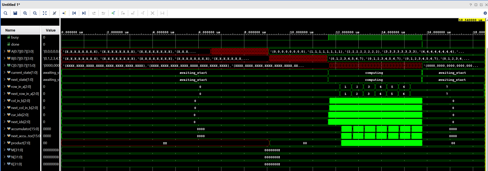

FPGA LLM
July 1, 2025
Afternoon: I'm not going to lie, I didn't think this would take me more than a month. But, here we are. The AXI memory test ran, which is a start,
but I forgot to set the HBM status registers. So, the testbench that polls that register never got past the AXI setup. It is much, much faster though.
In fact the only reason it isn't instant is because of the delay in the polling loop which is supposed to be for the HBM. I spent some time thinking
about it last night, and I think the AXI RAM is the way to go about this. It basically works the same way as the HBM does, it is just a lot
faster to simulate. The rest of the CL interfaces with it the same way it would the HBM though. So, if I get the whole thing to work with the
AXI module, it should (in theory) work with the HBM. Obviously the AXI module is like one cycle reads which the HBM does not have, but I won't
use it to actually time the thing. The other issue is that this doesn't scale. So I'm going to start with AXI RAM, finish the whole LLM, and then
move on to HBM. If HBM doesn't work, I am hoping that DDR doesn't have the same timing issues with XSIM. Then I'll just use that. To be fair,
I'm fairly certain that the CL interfaces with DDR the same way it would with HBM, and the host code uses PCIS for it anyway. Hmm...might be worth
using DDR from now. Anyway, I'll finish the AXI RAM right now and spend some time looking at the DDR. Once the AXI RAM is done, I can get to
work on QAT which sounds like fun.
Evening: So I tried to test the HBM stuff on their examples. I know now that some of the stuff they have is wrong, but I just wanted to see if it ran since
that is the problem I was having. It doesn't. Which is a good thing, because that means the likelihood that I have done something wrong is not 100%? (Honestly
this is not really a good thing). Anyway, while trying to figure out why my AXI RAM wasn't working either, I left the DDR test on the dram_hbm module the have
running. It seems to work. So, I think I'm going to eventually use DDR. Sucks that I can't use HBM, but oh well. For now, I'm going to use the simple BRAM IP
that they have included. I'll implement DDR later. Hopefully things should start moving along quicker now.
June 30, 2025
Afternoon: I thought I'd get much further than I did yesteday. I'm still working on HBM. Also, there are some great resouces from Nvidia and Pytorch on how to do quantization aware training. After a cursory
reading of both, I think this will be the easiest part of this project. Also, turns out there is a SmolLM2-135M that is out, so I think I'll use that. Anyway, back to figuring out which signals are
not connected corectly for the HBM.
Later But Still Afternoon: This is just insane. So, it turns out that XSIM has a bunch of timing issues. To deal with these timing issues, AWS
adds a 200ps delay to each AXI signal. That is not the problem. The problem is that there is some other bug in XSIM, that slows it down
like crazy when using HBM. I know this, because intializing the HBM can take upto 50000ns as per the test they provide. However, simulating
5000ns takes me 2 minutes. That means that any test I want to run will take 3 hours to even start. That's just insane. So, I tried a bunch of things.
I first tried to track none of the signals, I figured less signals to track would mean less things to measure and lead to a speed up. That didn't help,
if it did it didn't help much. Then, I tried to turn debug mode off for XSIM, which should also help it go faster. That didn't help much either.
I mean both these changes help me come down from 2 minutes per iteration to 1 min 20 seconds. Helpful, but I still have to wake like 2 hours
before a test even starts running. I then decided to see how far I was pushing my CPU, to decide whether I should go from a c5.4xlarge isntance
that I am using to something bigger. Turns out, I am only using 1 of my cores. So, I think I have changed it so that it uses 4 of the available
cores now. I've just started another run, and it'll take a while to even see if this is helpful, but I am just hoping and praying.
Update: The core count was not the problem. It was a problem, but it doesn't help. It doesn't help because you are constantly polling the HBM
registers to see if it has initialized. Between polling, you are simply adding a delay. So, you need to calculate all these signals, for
each clock cycle and there are just so many of them between the HBM IP and the shell. Turns out this is a known bug with XSIM that AWS have
mentioned. They also said you can fix it by using Questa or VCS. I don't have access to either, and they apparently cost a lot of money to use.
I'm stuck with XSIM for now. Yay!
Evening: It doesn't work. It seems like there is just nothing I can do. The HBM IP has some constants, like the time it takes to check
the temperature, the time it takes to check some other infomation etc. They are all on the order of mili/microseconds. The problem is that
it takes a long time to simulate even microseconds. Now, the AWS team has astutely noted that in simulation you can decrease those numbers
by like 10000x (I'm not even kidding). So, I did that. It didn't help. The only real hope I have of getting this to work with HBM is that
I have changed those constants incorrectly. Fortunately this is a very real possibility because I'm passing them as arguments into my make
command (which I believe you can do) because I wanted to avoid having to recompile the HBM IP. I'm going to change it directly in the HBM IP
and hope that speeds things up. If it does then well and good, if it doesn't then boy am I am in a pickle.
Night: I'm honestly just at a loss. Nothing I try seems to work. Some of the things that should work seem to make it slower. I've tried to
ask every model and they are all useless. I spent liek 2 hours going through the HBM IP to see what it does in that inititalization period,
found some stuff that should help, it didn't. I'm quite confused as to where to go from here. In case I can't figure it out, I've created
an AXI memory module that mimics the working of the HBM. I was going to use DDR instead, but honestly I want the HBM, even if it's the last thing
that I have. So, I'll spend some more time on it. If I can't get it to work, I'll use the AXI module, and then when I have the rest of everything
working, I'll get back to sifting through thousands of lines of code to figure out anything I can do to make it work. I do however have a sneaking
suspicion that some of my arguments are not making it to the HBP IP. This is the last thing for me to check. I'm trying to run a test with the
AXI module right now, but its 4 30 am so I don't know if I'll get to the arguments stuff tonight. Oh well, something to look forward to I guess.
June 29, 2025
Afternoon: Okay. So, I was right...it's not as simple as saying hey here is a 4 bit matrix of weights that you use instead. In fact, quantization is only for storing the weights, not for performing
the operations. The weights are all stored in INT4 (or INT8) along with some other data like a scaling factor and a zero point and then the weights are converted back to BF16 or whatever
before any operations are performed. For something as small as SmolLM I am not memory constrained, so quantizing the weights for memory efficincy was never the goal. The problem is that
I FPGAs are bad at floating point operations. So, quantized weights are no good if if I have to perform flops. But, one can peform quantization aware finetuning, so that the entire pipeline,
operations and all, are done in int quantization. So, after I finish the embeddings I'm going to do that today. Probably as a different project because it feels big enough to be one. I don't want
some incredible sota model, I just want something that generates coherent text. Also, since its a 135M parameter model I can just do this in colab, which is cool cause I think I have some credits
that I wasn't sure what I was going to use it fo now that I do all my other work on RunPod. Since I'm doing this, I think I'm just going to do INT8. The HBM has enough space, so I might as well.
I'll have to rework the matmul modules, but I'll cross that bridge when I get to it. Embeddings now, INT8 quantization aware finetuning after.
Later But Still Afternoon: This is the hardest thing I've worked on. Like other things were hard, but I wasn't going into any of them as blind as I am with this. I love it. Anyway, I
had to create my own wrapper, which I did. I also had to add in something called a crossbar. Basically, the hsot would use the PCIS interface to interact with the HBM. However, the way
it has been set up is that the host can also write to DDR (which I don't have), and it depends on the address they write to. The AWS folks were kind enough to provide a crossbar which
routes the data to/from the correct place. Instantiating this was a pain, but I got it to work. I think. I also made a module that will just go through the HBM reading back data. Now,
I am going to write a test case. This will write a bunch of data to the HBM, and then it will use the module to go through the HBM and read back the data. If it works, that means I can
set up the HBM with all the parameters, and I can read back the weights etc from my custom logic as I need them. I am really hoping this works first try because if it doesn't I'm in for
a world of pain.
June 28, 2025
Afternoon: Okay so because of SPMD more batch dimensions add minimal overhead for GPUs. However, here that isn't the case. Fortunately, I don't really want to
do multiple batches right now. For the 3D multiplications, like the bsz, seq_len, hidden_dim ones, the bsz will only be 1 for me (at the moment). So, that's a 2D
multiplication. I just need to make a 3D multiplier module for the 4D multiplications, cause the batch size will be 1, but the num_heads which is also a batch dimension
won't be 1. So that is what I am working on right now. Once I have that, I'm going to make a module that will perform transpose. Then, I'll make a module that can scale a matrix.
I should now have all the components to perform SDPA except for the softmax. Time to do the 3D matmul stuff. Honestly, just for clarity and debugging I might make a 4D multiplier module.
Both 3D and 4D are basically just looped 2D multiplications. Since bsz is 1 anyway, there is no loop, so no overhead? But it probably also makes it easier to track down errors in the shapes.
Let's see. I know that people probably don't do this stuff using loops, but I will parallelize and optimize later. I just want something that works for now.
Night: I think I've been thinking about this wrong. I'm implemented the 3D multiplier, and I also made a top-level wrapper
which has a 2D multiplier and a 3D multiplier. For starters, if I'm hardware constrained I just need 1 4D multiplier. Dimensions
0 and 1 can be 1 to make it 2D/3D. Now, because all of this is hardware, I would need to declare the maximum dimensions for a module. So, I need to handle matmuls of abitary sizes.
Certain dimensions, like the batch dimension can be fixed (paametized because good code you know), but other dimensions should be arbitary. Maybe I should make a matrix module, where
it stores the number of rows and columns and the data. For now it will have registers, but later it can store the start/end addresses in HBM. I'm not sure about this, but I feel like there
is a better way to stucture this than what I have right now. The good news is I have something that can perform 3D multiplication. I'll also make a 4D multiplication module because I think
I'm going to keep the batch size dimension, even if it is always 1.
Later Night: I think I'm going to start with just putting SmolLM on the FPGA. I wanted to get comfortable with F2 development, and I think I am comfortable enough. I am also excited to
work with the HBM, which is probably why I decided to go in this direction. I already spent some time understanding how the HBM works, so I'm going to start with the embedding matrix.
I figure this is a good place to start because 1. it is the first thing that happens, 2. it's just a look up table. How hard can it be? So, embeddings tonight, then I'll worry about other stuff
tomorrow.
Even Later Night: I lost track of time, and it is not 4 AM. But, I was able to get the base test running with a lot of the HBM modules copied over and instantiated. I am now trying to figure out
which wrapper is the best to use fo the HBM stuff. Basically, they have the direct memory access example which has a wrapper that allows you to read back 32 bits at a time. Which is fine,
and since I am not too focused on optimizations, its okay for now. However, the memory peformance example where they try to get as close as possible to that yummy 460 GB/s from the HBM has a wrapper
that allows me to actually use bursts. Since my embeddings are 576 dimensional and each dimension is 4 bits, each embedding is 288 bytes. Each beat is 64 bytes, so I can read the embeddings for a token
back in bursts of 5 beats. This means that the mem_perf one is probably the way to go. I know I'm not focusing on optimizations, but if it is a simple question of which files to copy, I should
copy the one that is better right? I'll go through both of them tonight just to be sure. Tomorrow I should have the embeddings working. That's step 1 of getting SmolLM to work. It's also time to
figure out how exactly quantization works. I knew it wasn't as simple as saying hey use this 4 bit integer matrix instead of this other one, but I don't know what exactly the changes are beyond this.
P.S. the R key on my keyboard is broken, and I really need to press down on it to get it to work. It slows me down like crazy. I should buy a new keyboard.
June 27, 2025
Night: I haven't had the chance to do much today, but I've just spent the whole day thinking about the sdk stuff. So, I have the rest of the night
carved out for this. But, after my experience with the co-simulation stuff, I don't think I should spend more time than just tonight on it.
I can finish the LLM stuff soon, and if I can simulate it even with just hardware, that's a good place to be. So, tonight I'm actually going to
start by testing their HDK/SDK project. If it works, then I will spend more time tonight on it. If not, I'm going to load SmolLM into a notebook
to see exactly what multiplications they perform. I also realised that I won't just be doing 2D multiplications. I will be doing at least 3D, and
probably 4D multiplications. I also want to figure out how to have ROM so that I can precompute and load positional embeddings. I don't know if
SmolLM uses ROPE, but if they do that will be fun to figure out. Anyway, time to get to work.
Later Night: I think I'm able to run co-simulation? It doesn't finish running, it hangs somewhere and I'm not sure why?
Initially I thought it was because I was polling the wrong thing, but that doesn't seem to be the issue. To be fair,
this is much further than I have come with co-simulation before. There were a bunch of issues with how I was doing it
previously, including but no limited to the imports, the functions I was using, and the directory structure. I also never
actually called make on the C files. I'm going to let this be for now because honestly I'm excited to get 4D matmuls to work,
because then I'm not very far from having a significant portion of the LLM stuff running on the FPGA. I'm going to spend the
rest of tonight on seeing how many different combinations of matmuls there are. I want to do this to see if I should have
1 matmul module that can perform multipliations on matrices with an arbitarry number of elements in each dimension, or I should
have a module for each combination of elements in each dimension. I think some combination of these is the way to go, but it
depends on how mny combinations there are. I am leaning towards more flexible multipliers so this can scale to something beyond
SmolLM.
Even Later Night: I'm abandoning the co-simulation stuff. I loaded in SmolLM, turns out it just uses Llama. They've brought
the size down from the regular llama models by having a smaller hidden size, less layers and a smaller vocab size.
All not good for a sota model (allthough this is apparently sota for its size) but good enough for it to be the first
model I put on an FPGA. Time to track down all the matrix operations that are performed, and the dimensions for any matmul.
From what I remember and can gauge from the architecture, each decoder layer will do
[bsz, seq_len, hidden_dim] x [hidden_dim, num_heads * head_dim] => [bsz, seq_len, num_heads * head_dim] because they use GQA.
Then there will also be the embedding layer, which honestly might be better for me to put into ROM of some kind? I'm not sure how to handle that atm.
Anyway to perform attention I'll have to perform a [bsz, num_heads, seq_len, head_dim] x [bsz, num_heads, head_dim, seq_len] => [bsz, num_heads, seq_len, seq_len]
And I also need to perform a transpose operation. Basically, I need to handle 3D and 4D multiplications. I think my plan at the moment
is to have 1 4D multiplier, and 3 3D multipliers. Let's say that I can put the embeddings into something that is look-up table esque.
Then, each decoder layer needs to convert the input hidden states into queries, keys, and values. This can be done simultaneuously.
So, 3 3D multipliers. Then K^T, so need to do transpose somehow. Then QK^T, so 4D. Then *V (yes yes I ignored softmax and /sqrt(d_k)),
another 4D. Both can share the same 4D multiplier. I know I've glossed over the positional embeddings, and softmax.
I also know that sin and cos to some max_tokens can be precomputed and stored in ROM of some kind. So, I'm ignoring
that for the moment. I'm sure there is a good way to do softmax on the FPGA. I just don't know what it is.
I think the move now is implement a 3D multiplier module, and a 4D multiplier module. From there, create a register
based SDPA module to test all the multiplications. HBM will have to wait.
June 26, 2025
Afternoon: I've been thinking about this waveforms stuff wrong. My issue was that I couldn't get x11 to work, so I
couldn't get any GUIs to work. But, I don't need to use x11. I can just download the vcd file, and then see it
on my compter. So I'm just using GTKWave to open the file and I can see all the signals I need. I haven't quite figured out
what to put in the waves.tcl file so I can get the ight signals in my waveform, but that is something I can figue out I'm sure.
Also, while going though the docs I found that they have an hdk/sdk project. I'm not sure if I can use this to
write the host code. If I can, then it's not a big deal that I can't co-simulate. Should spend time on this.
Night: I'm actually quite silly. So, VCD files can't store unpacked arrays, which the matrices are. So,
they weren't showing up in the waveform. I spent too long trying to figure out the right way to structure
my tcl file before realising this. Now, I have Vivado on my computer. So, I don't need to work with
VCD files. So, the same way I download the VCD file, I can just download the WDB file which stores
everything, unpacked arrays and all, and just use XSIM on my computer to view it like I normally would.
Dissapointing that I didn't think of this earlier. I'll spend the rest of tonight figuring out
how to write host code.

Simulation of Int4 MatMul on EC2 for F2 Instance
June 25, 2025
I just wanted to wrap up the Int4 matmul stuff completely, so I've spent some more time on it today. The way it
works right now is that there is a control register at 0x0, and then 0x4 onwards is matrix A, then matrix B's address
starts from wherever matrix A will end (since it is parameterised), and similarly there is matrix C. You can fill
the registers (control or for each element) with the values you want using AXI transactions and OCL, and then you
can signal to start computation using the control register. You can then poll one of the status bits to see if it's done,
and read back the result from matrix C, once again using AXI transactions. Now I'm going to instantiate it in the top level,
and write a quick test bench to see if it works. If it does, I'll spend the rest of the day figuring out waveforms.
It really sucks not being able to run the co-simulation yet because testing this in C would have been such a breeze. Oh well.
June 24, 2025
I spent all day today working on matmul, and understanding how to use the HBM from the examples they've provided.
I also looked into why vivado isn't working, and why I can't get stuff to work with ForwardX11 on. I don't have
much more clarity on this, but at least things are moving along on the actual hardware. I'm sure there will be something
in Python that will allow me to generate better, interactive waveforms if I need them. Tomorrow I will work with HBM.
I will also spend time with SmolLM, and see exactly what the matrix dimensions are to know exactly what I need.
June 23, 2025
Afternoon: Progress! I am getting the co-simulation test to run, but I am still getting an error.
Also, I was going through this blog to see where I started from, and I noticed that it looks so much nicer
with the pictures and stuff and it sucks that I don't have any to really show right now. Hopefully, I will have some soon.
But, spending this extra day was helpful because I might actually be able to get the co-simulation to work. But, if I don't
I'm not putting any more time towards it right now. I'm going to move onto matmul tomorrow whether I can get it to work or not.
Evening: I'm having issues where some of the function calls are not placed in an SV scope, and that seems to be the
issue. The part that I am confused about, is I have exactly what they do. I've been using the dram_hbm_dma example they provide as ground truth to get co-simulation to work. I'm starting
to think that maybe the example they've provided is wrong. I should have probably run this before I started following it,
but to be fair in their docs they've said that this is where one should look for co-simulation. So, I am going to start
investigating whether or not their example work. If it doesn't, it might be easier to figure out why that doesn't work
than what I have.
Night: Okay. So, it turns out that the AWS example is wrong. Or at least I cannot get it to work. I'm almost cerrtain I am
not doing anything wrong, but it's frustrating that this is why I won't be able to co-simulate. I'm just going to move on to
matmuls, I can move on to it today so at least I got something out of this. I'm not entirely sure how to test the HBM and the DRAM
but I'll figure it out (assuming there are no mistakes in their examples for those). Dissapointment about the docs is not the worst
thing though, because I'm unhappy enough about this to want to finish the 4-bit register matmul tonight and move on to the HBM one
tomorrow.
Later Night: Matmul seems to be working. This is the same minimal register based implementation that I had. Since I am no longer
doing co-simulation, I figure I will spend the rest of the night figuring out how to get waveforms out of the simulation.
To be honest, it is probably not going to be that hard to vibe-code something that allows me to visualise them. Anyway,
I should confirm that the matmul stuff is working. Not because I need to test the module, I know it works, but becuase I want to
make sure that I know the entire process of starting from a new project to getting something that runs.
Even Later Night: Register based matmul works. I am using OCL to load in the matrices one element at a time. Since the
data bus size is 64 bits though I can load in 16 elements at a time. I'm not going to make this change though becuase
I will never actually use OCL to load in the matrices. I'm going to spend the first half of tomorrow on the waveforms,
and then move on to HBM. I believe that HBM will be the hardest part of this because it also requires me to use PCIM/PCIS
for loading data, and the HBM monitor IO. Once this is all in order, getting SmolLM to run is just putting everything
together. Integration hell is real though so I don't want to get ahead of myself.
P.S. I should start putting timestamps instead of putting evening, night, etc.
June 22, 2025
Night: I forgot to update this with what I've been doing, but I spent a long time trying to figure out how to get waveforms.
Waveforms were a great way for me to debug stuff, so I wanted to get it to work. I couldn't. I just can't get Vivado to open.
I'm generating the waveform files, I just can't get it to open. So, I turned to python and of course there is a package
that allows me to open wdb files, which I can then use to generate images for myself. But it's not ideal. BUT, I'm much closer
to getting co-simulation to work. I've been stuck on some imports that I don't know how to fix yet, but I imagine it won't
take me that long. Once this is done, I can finally move on to the actual matmul.
Later Night: I'm at a little bit of a loss for how to run this co-simulation stuff. But, I think I will spend one more day on it.
If I can get it to work, then that is well and good. If I can't, I can always just test everything in SV, so it's okay.
So, if I can't get this to work by tomorrow, I'll just implement the 4-bit matmul using registers. Then, I will do it using
HBM, (there is also DRAM which I can look at using). Then, from there to LLM should be hard but straightforward.
June 19, 2025
Afternoon: I realised that I forgot to fork the aws-fpga repository, so I did that and now most of everything I have done is on Github.
It isn't working though so there is still that. I don't even udnerstand what some of the errors I am getting mean, but hey,
one error at a time I guess. I've been trying to use Claude, Gemini and ChatGPT to help me understand what to do,
but the funny thing is that there is just so much information, and some of it is quite pooly documented, so both of us are confused.
Oh well, it's still going along. Conservatively, I could get this single register example to work by tomorrow and then from there
I can get a register based matrix multiply to work in a day.
Evening: It works! The module always worked I guess, but now I was able to run it through simultion with my own test.
There is still stuff that I haven't figured out, like how do I get the waveforms out. Also, there is something called
Co-Simulation, where you test the C software and the SystemVerilog hardware together. I don'tknow how to do that.
But, finally this is some measurable progress. I thought I could get this done by tomorrow, and since I am spending more time on it
today, I should be able to figure the waveforms out, and then the co-simulation by tomorrow. From there matmul should be easy.
June 18, 2025
I've been working on this stuff for a while now, and it might be one of the hardest things I've ever done. The documentation is quite bad, and the examples
are so large and overwhelming. AWS has made quite a few changes between F1 and F2, so many resources are outdated.
I am also completely out of my depth with the SystemVerilog stuff they do in their examples. So,
I decided to start from the most minimal example. I have spent SO LONG on creating a counter (the counter wasn't the hard part,
figuing out how to "wire" all the AXI stuff together was) and it's still not done. But, I can now elaborate it and run a simulation that turns it on.
This means that all my OCL connections (AXI stuff) are working.
I've set up the counter such that you can set a reset value, enable/disable it, and reset it to the reset value. All through AXI transactions.
Now, it's time to run a proper test on just the hardware, and then test it with the software.
Once that's done, I can move on to working with the HBM.
June 10, 2025
Morning: I didn't realise that setting everything up on AWS would take as long as it did. I tried all kinds of tools before going back to VSCode and Remote SSH.
I also spent some time looking at their provided examples, this seems like something I could do. Since I'm using the command line to run simulations and
stuff I'm not sure how things are going to look. I use the simulation for debugging stuff, and it seems like I can do that here too (I made like a counter
module just to try things and it worked) but through like print statements? For whatever reason the Vivado GUI doesn't work so until I can figure that out,
I'm stuck with the CLI.
Evening: I didn't realise that I have no real way to show different "blogs" from the same day until I started writing this. I'll fix that at some point.
After spending more time understanding exactly how this F2 instance stuff works, I have to say that I can see why AWS is so big
(I know it's not because of FPGAs, but I mean this more in like a wow if they can do this everything they have must be insane.), and suffering through their
support was worth it. What they've done for me is basically turn the FPGA into my GPU. They allow you to write stuff in C/C++ to be able to communicate with
the FPGA. They also allow you to write stuff in SystemVerilog which is run on the FPGA. So, for the final LLM stuff, I'll be able to accept inputs and tokenize
in C++, which is such a lifesaver because I hadn't thought about how to do it on an FPGA. The FPGA just has to do the heavy lifting (which makes so much sense).
Currently testing my Int4 matmul stuff on AWSs FPGA. Pretty cool.
June 9, 2025
I've spent some time understanding how exactly the HBM works and how I can use it. Each board has 16GB of HBM
(which is way more than I need - a 135M parameter model in INT4 will use 67.5MB of space). You need to use the AXI protocol to communicate with it.
Also, according to the README it uses AXI3 at 450MHz (which seems slow? I remember when I built a PC like 7 years ago the DDR4 ram I had was at 3200 MHz).
It has some AXI4 conversion layer which is at 250MHz. I'm not sure about why the discrepency, or what the differences are so I should spend some time reading
about this (they have modules for the conversion from AXI4 to AXI3 and for the HBM IP).
Sidenote: I'm using instance connect on EC2, and when I try to ctrl + shift + c firefox opens up the inspector. More reason to finish the multi clipboard.
June 8, 2025
FINALLY! After what has felt like an eternity of back and forth with AWS support they finally unblocked by account. I've already set up my instance,
and am figuring out how to get all teh Vivado stuff to work before I move to working on this full time. Not much progress has been made on the FPGALLM front
so far, but things should go much faster now. I've also been looking into the other couple things and I have some cool stuff to share. I also had some
other stuff that I wanted to kind of explore so I'll probably write about that too. Not much else to say, just excited to finally be able to lock in on this.
June 3, 2025
I finally got access to the AWS account that has all the Nash credits, but for some reason I can't create any new EC2 instance. I also learned that
my understanding of how working on AWS will work was wrong. I don't need to create an F2 instance to be able to develop for FPGAs, I can use any instance
with their FPGA AMI, and then the bitstream that is generated will run on an F2 instance. While waiting for a response from AWS support, I've decided to look
at ways that I can parallelize the matrix multiplication. I've decided that I'm going to push the systolic array stuff back further than I initially expected,
to get it to run first before I make any big improvements. While I wait though, I think I'm going to try to process more than 1 multiply-and-accumulate operation
in 1 clock cycle. I think I'm going to do this with like multiple accumulators that then get added together, but I'm not entirely sure. I also plan to work on
some of the smaller projects like the PC-iOS airdrop, and multi clipboard.
May 28, 2025
I have read that TPUs use systolic arrays for their operations, so I spent some time looking into what they are, how they are implemented,
and how I can use them for matrix multiplication. However, given that I haven't worked with SystemVerilog, I've implemented a simple, 2 for-loop implementation.
This is not efficient, but I figure if I start here I can work on implementing something faster later. I think the general flow I will follow is:
2 for loops => row * column in parallel => systolic array. One of the things I had a hard time with for the MNIST stuff was reading in weights from BRAM.
I imagine that is one of the most important things for me to do (figuring out how and where to read the weights from) so before making anything faster,
I should spend some time figuring out how this whole thing is going to be structured. Reading and using weights is what I should work on next.
Based on some math that I did very quickly while working on this, I should be able to support upto 512 dimension matmul without overflowing
(INT4 x INT4 => INT8 which has the range -64 to 63, 16-bit accumlator can have values from -2^15 to 2^15 - 1, so 2^15 / 64 = 512). I don't know if any matmul goes
beyond 512 dimensions for SmolLM, so will leave it at this for now. Going up to 32 bits requires changing literally 2 numbers so can make that change any time
(will require more resources etc. but I don't think I'm pushing the bounds of a $15000 board just yet). I remember that there are hazards and stuff that can go wrong
when actually running on hardware, so although most of what I am doing is focused around getting it to run in simulation, I should probably be mindful of this when measuring
performance increase, otherwise I could set the clock speed to whatever I want and say that the performance is great.

Simulation of Int4 MatMul [[1, 2], [3, 4]] x [[5, 6], [7, -8]] => [[19, -10], [43, -14]]
and [[7, -8], [-4, 0]] x [[-1, 3], [2, -5]] => [[-23, 61], [4, -12]]
May 27, 2025
I spent some time getting the Vitis suite installed. They don't have the boards used on EC2 F2 instances, so I picked whatever was closest,
and since it's been a while since I worked with SystemVerilog I decided a good place to start would probably be with the ALU.
In ECE385 we learned about different kinds of adders (ripple carry, carry lookahead, carry select) but I'm just going to use the + operation because
Vivado will apparently implement the adder that is the most efficient (although if I'm not LUT or DSP contstrained might be interestint to experiment with different kinds).
I also wrote a testbench for positive and negative numbers and it seems to work. I decided to implement an accumlator instead of an adder, because I can't think
of a place where you would not be accumulating the results for the forward pass (although as I am writing this I wonder how the position embeddings are added for
qunatized models, and those might require a regular addition operation). The next step is to implement a multiplier, and then I should have enough to check an int4 matmul.
I was reading a little bit about how the forward pass happens for quantized models, and it seems like INT8 x INT8 => INT32, then the bias is added,
and the output is requantized. This is also something I'll have to implement later.
Again, while writing this I wonder if the accumulator is the best way to go about this or not. While performing a matmul,
one would multiply a row and a column entry-wise, and then add all of them together. Imagine I perform n multiplications in parallel (based on
how many multipliers I have), to add all of them to the same register using the accumulator as it is implemented right now, it would take me n clock cycles
(or n - 1 if it just starts out with the value of the first multiplication). Instead, I could create an adder, that
adds multiple numbers together, and then that output is what is stored in the register. Perhaps implementing an adder like this would be better, which with the + operation is easy.
Also, since I will be performing the multiplication first, I would not be adding 4 bit numbers, because the output could be upto 8 bits (-8*-8 = 64).
It's probably a good idea to implement a 4 bit matmul module first, see how that goes and decide what I need. The simulations are cool to look at anyway.
Simulation of accumulator adding [1, 7] => 0x1C (21)
May 24, 2025
I first worked on FPGAs + AI in my Digital Systems class where for my final project I ran a model for handwriting recognition on the FPGA we were given.
Since MNIST is a relatively easy task, a single linear linear layer performed well enough. I also cut some other corners by converting the inputs into binary,
which meant that I didn't need to perform any floating point multiplications. FPGAs don't seem ideal for floating point operations,
so it'll be interesting to see if there are any performace gains.
From what I remember, it took 8 clock cycles for addition and 12-13 for multiplication (I'm not too worried about this because I think I can pipeline to process 12 inputs at a time).
I think I'm going to start with a very small model like SmolLM and integer quantization and play it by ear. For the MNIST
stuff I wrote a Python script to convert the weights (only 1 weight matrix) into a text file with the binary representations of the weights, and loaded that into ROM.
That worked okay for something with only 7840 parameters, but there's no way that'll work for 135M parameters. It'll also be interesting to
figure out tokenization, activation functions, different kinds of attention etc. I'll start by getting Vivado etc. set up and writing a module for INT4 multiplication.
From there I can work on matrix muliplications, and then fill in the rest. I should also check what board AWS EC2 F2 instances have, and work off those.